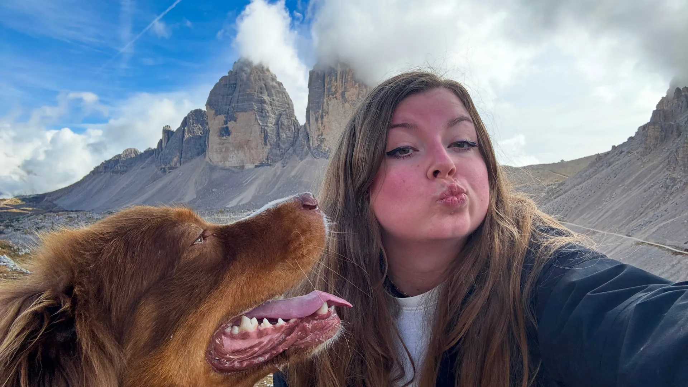

Com, contenu & communauté · Toulouse
Hey, c'est Cloé.
Je fais grandir les marques et leurs communautés : sur les réseaux, en print et sur le terrain.
Mes terrains de jeu
Social mediaStratégieContenusCommunautéReels & storiesCréation graphiqueIdentité visuelleDirection artistiquePrintVisuels produit & IAInfluence & affiliationPartenariatsContrats
Suivi & reportingPhoto & vidéoShootingRetoucheMontageRédactionArticles & SEOEmailingLinkedIn & ghostwritingCom interne & événementielSupportsTeam buildingSalons
Projets pro


Labo
Mes projets d'école et mes projets perso : logos, photos, expérimentations.
À propos
Montagne, van et running : j'aime les marques qui ont une vraie communauté, et les faire grandir.
Mon parcours